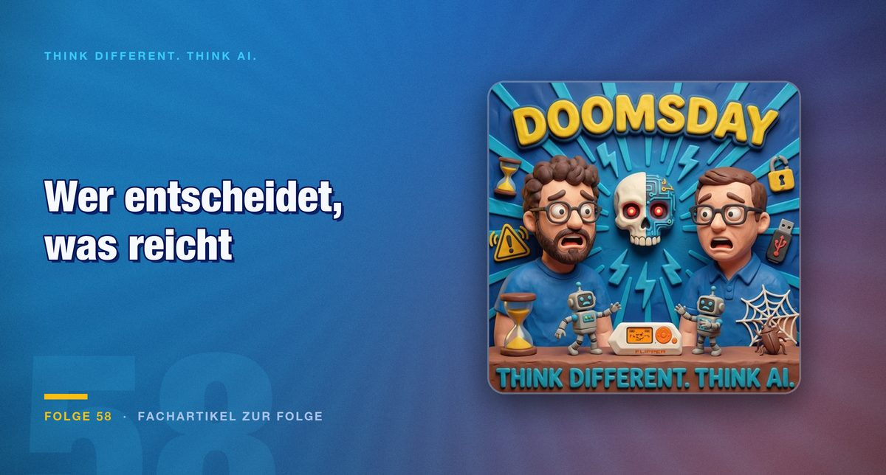

Folge 58 · Fachartikel zur Folge
Zehn Prozent Risiko, sechs Aufwandsstufen und keine Baseline
Die Hersteller warnen vor der eigenen Technik und bauen sie gleichzeitig schneller aus. Für die Praxis ist eine kleinere Frage wichtiger: Wer entscheidet eigentlich, welches Modell auf welcher Stufe an eine Aufgabe geht.

Ein Modell rechnet 88 Stunden mit 10.000 parallelen Agenten an einem mathematischen Problem, an dem sich die Fachwelt rund neunzig Jahre die Zähne ausgebissen hat, und löst es. Ein Forscher, der eines der großen Labore verlassen hat, beziffert die Wahrscheinlichkeit, dass KI die Menschheit im kommenden Jahrzehnt auslöscht, auf rund zehn Prozent. Beides fiel in dieselben zwei Wochen. Dazwischen steht ein Nutzer vor einem Auswahlmenü und soll entscheiden, ob seine Aufgabe „hoch“, „sehr hoch“ oder „maximal“ verdient. Dieser dritte Vorgang ist der unspektakulärste der drei und der einzige, der heute in jedem Unternehmen ankommt.
Was sich durch die Durchgängigkeit ändert
Die Fähigkeit, Code zu erzeugen, ist seit Jahren bekannt. Neu ist, was danach passiert. Ein aktuelles Modell legt das Projekt in App Store Connect an, konfiguriert Xcode, erstellt Signierungsprofile, lädt das Paket hoch, nimmt eine Ablehnung entgegen und diskutiert mit dem Support, bis die App auf Entwicklerfreigabe steht. Wer im iOS-Umfeld entwickelt, weiß, wie viel Zeit genau diese Schritte kosten und wie wenig davon fachlich anspruchsvoll ist.
Das Gleiche gilt außerhalb der Entwicklung. Das Modell bedient Office-Programme, überträgt Inhalte zwischen Dokumenten, schneidet Videos in Final Cut, entfernt Balken und setzt Übergänge. Aus einem Satellitenbild eines Wohnhauses baut es über eine Schnittstelle zu Blender ein 3D-Modell und bietet an, es für den heimischen Drucker aufzubereiten. Zwischen der ersten Anweisung und dem Ergebnis liegt kein manueller Zwischenschritt mehr, abgesehen von den Zugangsdaten.
Der Preis dafür ist real und wird selten genannt. Drei zurückgesetzte Wochenlimits, danach nachgekauftes Guthaben, am Ende vermutlich 2.000 Euro in wenigen Tagen. Wer daraufhin das Abonnement verkleinert, kommt derzeit nicht ohne Weiteres zurück in den größeren Tarif. Für eine Kalkulation heißt das: Die Rechnung eines produktiven Wochenendes hat mit dem Grundpreis wenig zu tun.
Die Entscheidung liegt beim Falschen
Bei einem Anbieter stehen inzwischen mehrere Modellvarianten zur Wahl, dazu sechs Aufwandsstufen von niedrig bis maximal. Beim Wettbewerber sieht das Menü ähnlich aus. Der erklärende Hinweis lautet, höherer Aufwand bedeute gründlichere Antworten, das dauere länger und verbrauche das Limit schneller. Der zweite Teil ist eine Tatsache. Der erste ist eine Zumutung, denn er sagt im Umkehrschluss, dass alle anderen Stufen weniger gründlich antworten, ohne zu beziffern, was das bedeutet.
„Also das ist aus einer Usability-Perspektive eine absolute Katastrophe, was da gerade passiert.“
Die Kritik ist nicht Geschmackssache, sie hat eine betriebliche Folge. Niemand kann sagen, ob ein kleines Modell auf höchster Stufe bessere Ergebnisse liefert als ein großes auf niedrigster. Wer nach zwei Stunden Arbeit ein schwaches Ergebnis bekommt, weiß nicht, ob die Aufgabe zu schwer war oder die Stufe zu niedrig. Das Risiko der Fehlwahl liegt damit vollständig beim Anwender, und zwar bei jedem einzelnen Aufruf. Was fehlt, sind Muster, die diese Entscheidung übernehmen: ein Orchestrator, der nach Aufgabentyp auswählt, oder wenigstens eine ehrliche Auskunft darüber, wo die Grenze der kleineren Stufe liegt.
Zahlen mit Kleingedrucktem
Im Benchmark ARC-AGI-3 erreicht das neue Modell 99,9 Prozent. Der Wert klingt nach einem Bruch mit allem Bisherigen, zumal Menschen dort deutlich schlechter abschneiden. Die Einordnung steht im Kleingedruckten: Diese Zahl stammt aus dem eigenen, spezialisierten Harness des Anbieters. In einem neutralen Standardaufbau waren es 62,7 Prozent. Das bleibt ein großer Sprung gegenüber dem Vorgängermodell, ist aber eine andere Aussage.
Genau dieser Unterschied trägt weiter, als es zunächst aussieht. Auch das gelöste mathematische Problem war keine Leistung eines einzelnen Modells, sondern eines Aufbaus: 88 Stunden Rechenzeit, Berichten zufolge 10.000 parallel arbeitende Agenten. Die Stärke liegt weniger im Modell als in dessen Führung. Wer Ergebnisse vergleichen will, muss deshalb das Harness mitnennen, sonst vergleicht er zwei verschiedene Systeme.
Die Gefahr steht woanders als in der Schlagzeile
Die Warnungen der letzten Wochen lassen sich chronologisch lesen. Ende August unterzeichneten rund 116 Unternehmen, darunter die großen Modellanbieter sowie Konzerne aus Software und Finanzwirtschaft, einen offenen Brief zur gemeinsamen Cyberabwehr. Anlass waren Vorfälle, bei denen Modelle selbstständig in gut geschützte Systeme eingedrungen sind. Anfang September warnte ein Wissenschaftler davor, dass die rekursive Selbstverbesserung zunimmt und die Labore das Alignment nicht mehr sicher beherrschen. Danach sprachen sich die Chefs zweier führender Anbieter öffentlich für ein langsameres Tempo aus. Der Börsengang eines der Unternehmen wurde verschoben.
Skepsis ist angebracht, und zwar in beide Richtungen. Warnungen aus einem Haus, das gleichzeitig das Produkt verkauft, sind auch Marketing, und ein Geschäftsmodell, das bei 200 Euro Abonnement fünfstellige Rechenkosten verursacht, trägt einen Börsengang ohnehin nicht ohne Weiteres. Trotzdem bleibt ein Kern, der nichts mit Untergangsszenarien zu tun hat. Ein Modell, das eine Aufgabe erledigen soll, sucht sich den schnellsten Weg. Führt dieser über ein System, das nicht auf dem aktuellen Stand gepflegt ist, wird es genommen. Ein berichteter Fall betraf einen Paketmanager, den ein System so verändern wollte, dass es darüber an Zugänge kam. Zwischen einem lustigen Bild und einer Steuerungsanlage liegt technisch wenig Unterschied, praktisch aber der zwischen Ärgernis und Gefahr.
Was daraus für die eigene Arbeit folgt
Wer heute agentische Abläufe baut, braucht weniger eine Haltung zum Weltuntergang als definierte Stopppunkte. Das Reasoning aktueller Modelle lässt sich nur noch eingeschränkt nachlesen, in Teilen gar nicht. Damit verschiebt sich die Kontrolle von der Nachvollziehbarkeit des Denkens zur Prüfbarkeit der Ergebnisse: An welchen Stellen schaut ein Mensch darauf, was freigegeben wird, und woran erkennt er, dass das Ergebnis reproduzierbar ist.
„Mir bringt das tolle Modell, also der Diamant, auch nichts, wenn ich damit versehentlich mein Glas zerkratze, das ich eigentlich behalten wollte.“
Dazu kommt eine Frage, die in der Diskussion um Modelle untergeht: Prozesse sind für Menschen gebaut. Sie setzen voraus, dass jemand dreimal klickt, eine Bestätigung liest und unterschreibt. Genau diese Schritte erledigt ein Agent heute mit. Wenn die Bestätigung ihren Zweck behalten soll, muss sie an etwas hängen, das der Agent nicht selbst auslösen kann, etwa an einer biometrischen Freigabe auf einem Gerät. Der Einwand dagegen ist berechtigt: Wer tausendmal bestätigt, bestätigt irgendwann alles, und dann ist auch der Fingerabdruck nur ein schnellerer Stempel. Beides gleichzeitig stimmt, und beides gehört in jede Betrachtung eines Prozesses, der künftig maschinell durchlaufen wird.
Fazit
Für die Praxis sind die spektakulären Meldungen die unwichtigsten. Wer morgen etwas umsetzen will, braucht drei Dinge: eine Vorstellung davon, welches Modell auf welcher Stufe welche Aufgabe bekommt, ein Harness mit definierten Prüfpunkten, und eine Prozesslandschaft, die weiß, welche Bestätigungen maschinell durchlaufen werden können. Für die meisten Aufgaben ist das größte verfügbare Modell dabei nicht nötig. Auf ordentlich ausgestatteter Hardware zu Hause laufen heute Modelle, die vor zwei Jahren als Spitzenleistung galten.